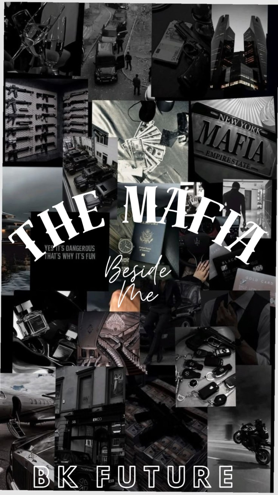

MANUSCRIPT 003
The Mafia Beside Me

MAFIA • MYSTERY • DRAMA MATURE THEMESShe was the girl who found a family when she needed one most.
Welcomed into the home of three siblings after growing up in foster care, she slowly became part of something she had never truly believed she could have—a family.
The youngest becomes her responsibility.
The oldest becomes something far more complicated.
A brother. A best friend. A secret she refuses to name.
But lately, the oldest has become increasingly distant. Always busy. Always somewhere else. Always unavailable whenever she needs him most.
She tells herself there is a reasonable explanation.
There isn't.
When she finally discovers where he's been—and what he's been involved in—the truth is far darker than anything she could have imagined.
And suddenly, the person she thought was simply standing beside her... has been living an entirely different life.